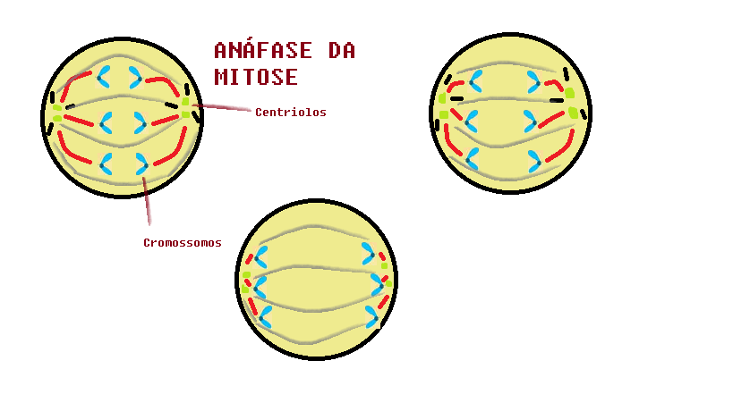
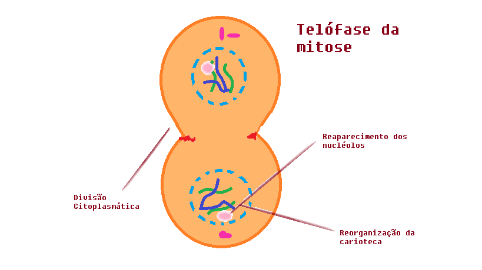

A mitose tem um processo equacional(E!), ela ocorre em células autossômicas(somáticas),
ou seja em todas as células com exceção das sexuais, ela também é uma célula diploide (2n).
Células diploides: são quando os 46 cromossomos ficam em pares, ou seja, quando ela se divide em 2 células,
cada uma das células ficam com 46 cromossomos(cromatinas ou DNA).
A MITOSE é dividida em 4 fases, são elas: Prófase, Metáfase, Anáfase e Telófase(com a citocinese).
Prófase

A prófase é uma fase detalhada, onde ocorre muitas mudanças nessa fase, algumas delas são:
*Como a mitose ocorre após a intérfase as suas organelas se dissolvem e só ficam os centríolos que já foram duplicados
na intérfase(G2), o núcleo está fraguimentando e os cromossomos se condensando.
*Quando o núcleo e o nucleolo somem o DNA se espalha pela célula(citoplasma).
*Os centríolos como eles se duplicaram, eles ficam em pares, e então ligam seus fusos(entre si). Os centríolos vão andando em volta da célula até ficarem em lados opostos(quando ficam de lados opostos mudam de fase), como também ocorre com
os cromossomos, ou seja, eles vão se alinhando até ficar na linha equatorial e quando eles se alinham mudam de fase.
* Lembre-se: As organelas nesse período elas somem, mas elas deixam uma marca onde elas ficam e então quando acaba a telófase elas voltam ao normal.
Metáfase

A metáfase é a fase mais simples, pois ocorre quando todos os cromossomos estão alinhados na linha equatorial
(centro na célula, não importa a sua direção na célula), e os centríolos em lados opostos, com isso os centríolos
se ligam ao cromossomos através de seus fusos.
Anáfase

A anáfase(ana=movimento) é o primeiro movimento da divisão celular, quando os cromossomos se dividem(separam), ou seja, de um eles se tornam dois,
e então os centríolos vão puxando os cromossomos até onde conseguirem(até chegarem o mais perto dos centríolos).
Telófase

Quando os cromossomos estão na lateral, ocorrerá uma ação chamada de centrípeta (força de fora para dentro), assim a célula se tornará duas. Após isso ocorre o retorno das organelas e então começará novamente a intérfase.
A MITOSE é dividida em 4 fases, são elas: Prófase, Metáfase, Anáfase e Telófase(com a citocinese).
Prófase
A prófase é uma fase detalhada, onde ocorre muitas mudanças nessa fase, algumas delas são:
*Como a mitose ocorre após a intérfase as suas organelas se dissolvem e só ficam os centríolos que já foram duplicados
na intérfase(G2), o núcleo está fraguimentando e os cromossomos se condensando.
*Quando o núcleo e o nucleolo somem o DNA se espalha pela célula(citoplasma).
*Os centríolos como eles se duplicaram, eles ficam em pares, e então ligam seus fusos(entre si). Os centríolos vão andando em volta da célula até ficarem em lados opostos(quando ficam de lados opostos mudam de fase), como também ocorre com
os cromossomos, ou seja, eles vão se alinhando até ficar na linha equatorial e quando eles se alinham mudam de fase.
* Lembre-se: As organelas nesse período elas somem, mas elas deixam uma marca onde elas ficam e então quando acaba a telófase elas voltam ao normal.
Metáfase